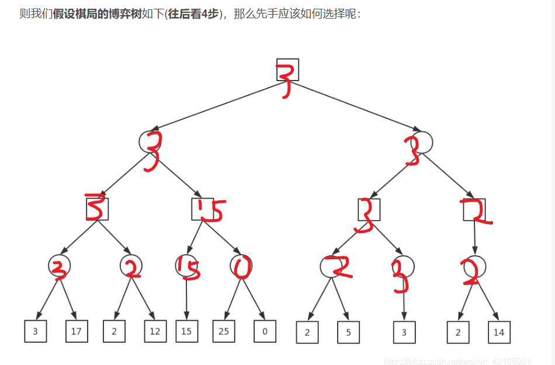

摘要：本文简单介绍了MinMax算法的原理。
preface: 几天前开发井字棋小游戏时，对困难模式下的人机代码毫无头绪，问了问deepseek，由此得知了MinMax这个名词。下面作浅显的介绍，附带在井字棋中的运用。
参考文章：最清晰易懂的MinMax算法和Alpha-Beta剪枝详解-CSDN博客
Minimax算法常用于棋类等由两方较量的游戏和程序。该算法是一个零总和算法，即一方要在可选的选项中选择将其优势最大化的选择，另一方则选择令对手优势最小化的方法。而开始的时候总和为0。很多棋类游戏可以采取此算法，例如井字棋（tic-tac-toe）。
以上是来自WIKI百科的解释，其实说的通俗一点，就是有两个人下棋，先手希望下一步的局面是自己胜算最大的局面，而后手则希望下一步的局面是先手胜算最小的局面（因为先手输，后手就会赢）。
那么，如何来判断当前的局面的胜算到底怎么样呢？我们可以设置一个估价函数，按照某种方案来计算当前局面的优劣程度。
正如图中所示，正方形代表你将要下的地方，圆形代表对手接下来要下的地方（图片里只是列举了对手两种可能的下法），里面的数字代表的你获胜的优势（相当于激励），对你来说，正方形数字要尽可能大；对手回合，其会选择数字最小的（我们假定对手足够厉害）。所以可以得到图中的结果但是这样的计算量十分大，所以一般而言我们会进行剪枝（因为这张图像枝条，然后利用算法能跳过一些分支，故称）

Alpha-beta剪枝的名称来自计算过程中传递的两个边界，这些边界基于已经看到的搜索树部分来限制可能的解决方案集。 其中，α 表示目前所有可能解中的最大下界（◽），β表示目前所有可能解中的最小上界（⚪）。因此，如果搜索树上的一个节点被考虑作为最优解的路上的节点（或者说是这个节点被认为是有必要进行搜索的节点），那么它一定满足以下条件（N是当前节点的估价值）：
$$
α≤N≤β
$$
在我们进行求解的过程中，α 和β会逐渐逼近。如果对于某一个节点，出现了α > β 的情况，那么，说明这个点一定不会产生最优解了，所以，我们就不再对其进行扩展（也就是不再生成子节点），这样就完成了对博弈树的剪枝。从代码的角度来看，其实很简单，就是加了一个break的判定条件，从而减少循环次数。
代码分析
这里简略了代码，仅仅展示了必要部分
int alphaBeta(int depth, int alpha, int beta, int isMaximizing) {
int score = evaluate();
if (score == 10 || score == -10) return score; // 胜负已分
if (isBoardFull()) return 0; // 平局
if (isMaximizing) {
int best = -INT_MAX;
for (int i = 0; i < BOARD_SIZE; i++) {
for (int j = 0; j < BOARD_SIZE; j++) {
if (board[i][j] == ' ') {
board[i][j] = 'X'; // 假设当前玩家是X
best = max(best, alphaBeta(depth + 1, alpha, beta, 0));
board[i][j] = ' '; // 撤销走法
alpha = max(alpha, best);
if (alpha >= beta) break; // 剪枝
}
}
}
return best;
}
else {
int best = INT_MAX;
for (int i = 0; i < BOARD_SIZE; i++) {
for (int j = 0; j < BOARD_SIZE; j++) {
if (board[i][j] == ' ') {
board[i][j] = 'O'; // 假设对手是O
best = min(best, alphaBeta(depth + 1, alpha, beta, 1));
board[i][j] = ' '; // 撤销走法
beta = min(beta, best);
if (alpha >= beta) break; // 剪枝
}
}
}
return best;
}
}
//main
while (1) {
board[row][col] = 'O'; // 玩家是O
// AI回合
printf("AI的回合...\n");
int bestScore = -INT_MAX;
int bestMove[2] = { -1, -1 };
for (int i = 0; i < BOARD_SIZE; i++) {
for (int j = 0; j < BOARD_SIZE; j++) {
if (board[i][j] == ' ') {
board[i][j] = 'X'; // AI是X
int moveScore = alphaBeta(0, -INT_MAX, INT_MAX, 0); // 使用Alpha-Beta剪枝
board[i][j] = ' '; // 撤销走法
if (moveScore > bestScore) {
bestScore = moveScore;
bestMove[0] = i;
bestMove[1] = j;
}
}
}
}
board[bestMove[0]][bestMove[1]] = 'X'; // AI走法它这里是main和剪枝函数都用了循环遍历，感觉可以简化，但还是更容易理解，main里面的是人机下一步所有落点的得分，然后用minMax得到分数，比较得分情况。得分有10，0，-10三种。这里的depth是搜索深度，因为是井字棋，所以没有限制depth。要加限制的话在加个if(depth == )的return值。
总的来看，这个例子还是很容易理解的。通过if，else实现交叉递归，通过最上面的游戏胜利等等条件设定底下得分（其实感觉可以设定更多得分，要不然显得很单薄，但不会编）。